True/False
BOOLEAN · Input field answered with one of two values
What is a True/False field?
- 1.1Adding a field and the property panel layout
1.1Adding a field and the property panel layout
Overview
True/False (BOOLEAN) is an input field answered with one of two values. Use it for items whose answer splits into two, such as consent given · criteria met · symptom present. Once added, two radio buttons appear right away; you can rename the two values 3.2 and also switch to a dropdown. 3.3 If the answer splits into three or more, or may grow later, use the Single choice type.
Screen guide
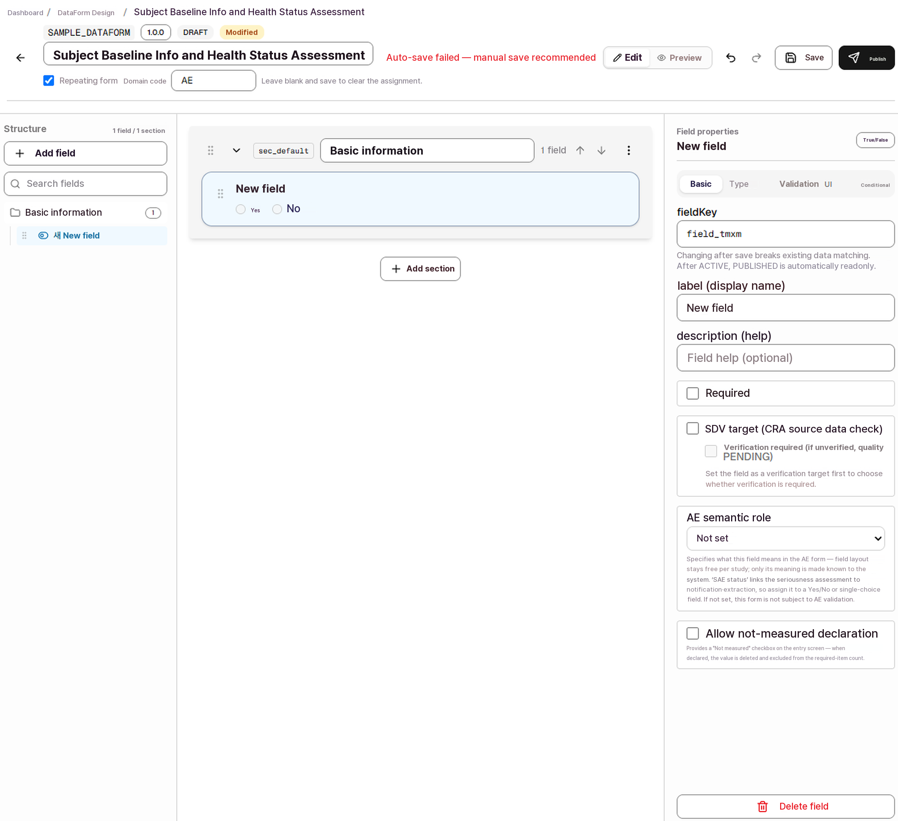
[+ Add field] — Specify the type here to create the field.
The new field is added to the structure tree.
Two radio buttons, “Yes” · “No”, appear right away on the WYSIWYG canvas. You do not need to create options separately.
fieldKey — The actual key under which the value is stored. 2.1
label (display name) · description (help) — The name and supporting description shown on screen. 2.1
Required · SDV target — Covered in 2.2 · 2.3.
AE semantic role — As the on-screen notice states, “‘SAE status’ links the seriousness assessment to notification · extraction, so assign it to a Yes/No or single-choice field”, this type is a valid target. Set it only in projects that use the adverse event form.
Allow not-measured declaration — Covered in 2.4.
Type badge “True/False” — The type of the selected field. It cannot be changed after the field is added.
5 property tabs — Basic · Type settings · Validation · UI · Conditional. Chapters 2–6 of this manual correspond to these tabs.
Precautions
Must check Data corruption · Form cannot be completed
- • ⛔ If a Single choice field is set to radio, it looks exactly like this type on screen. You cannot tell them apart by appearance, so check the type badge. What differs is the stored value — True/False stores
true·false, while Single choice stores a string such asY. This difference shows up in validation 4.3 and Conditional Ch. 6. - • If the item will serve as the basis for conditional display, choose Single choice. If a True/False field is used as the condition basis for another field, that field is not shown. Check Ch. 6 before you choose.
- • The type cannot be changed after the field is added, and after publishing (PUBLISH) the structure itself cannot be changed. If you chose the wrong type, delete the field and add it again. If changes are needed during operation, publish a new version.
Basic tab — name · required · verification target · not measured
- 2.1fieldKey · display name · help
- 2.2Required
- 2.3SDV target (CRA source data check)
- 2.4Allow not-measured declaration
2.1fieldKey · display name · help
Overview
This area sets the field's names. The storage key (fieldKey) and the name shown on screen (label) are different values, and the point up to which each may be changed differs.
Screen guide
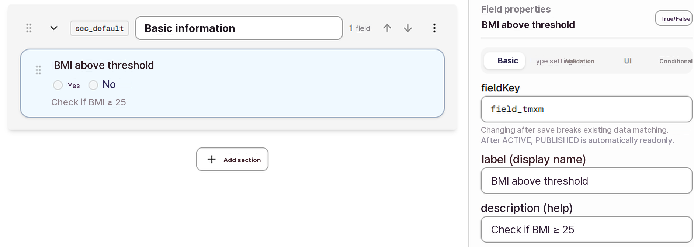
label (display name) — Enter the item name to show on the entry screen.
It is shown as the field title on the canvas.
description (help) — Enter a supporting description to show below the display name. If left blank, nothing is shown.
It is shown in gray text below the radio buttons.
fieldKey — The actual key under which the value is stored. It is assigned automatically when the field is added, like field_tmxm, and as the on-screen notice says, “Changing after save breaks existing data matching”.
Precautions
Must check Data corruption · Form cannot be completed
- • Write the display name so that the answer splits into two. Phrasing it as a yes/no item, as in “BMI above threshold”, makes clear what “Yes” · “No” mean. If you write only “BMI”, it is unclear what Yes · No answers.
- • Write the decision criterion in the help. Writing the criterion that draws the boundary, like “Check if BMI ≥ 25” in the capture, reduces variation between recorders — the names of the two values 3.2 alone do not show the criterion.
- • Do not change fieldKey after saving. The link to data already entered is broken, and the validation rules 4.3 and conditional display Ch. 6 that reference this field break as well.
Easily misunderstood behavior
- • The display name (label) can be changed at any time. It does not affect stored values.
2.2Required
Overview
Sets whether this field must be filled in for the form to be completed. True/False picks one of two values, so there is no place to express “unknown” — before making it required, first decide how to record cases that cannot be confirmed. 2.4
Screen guide
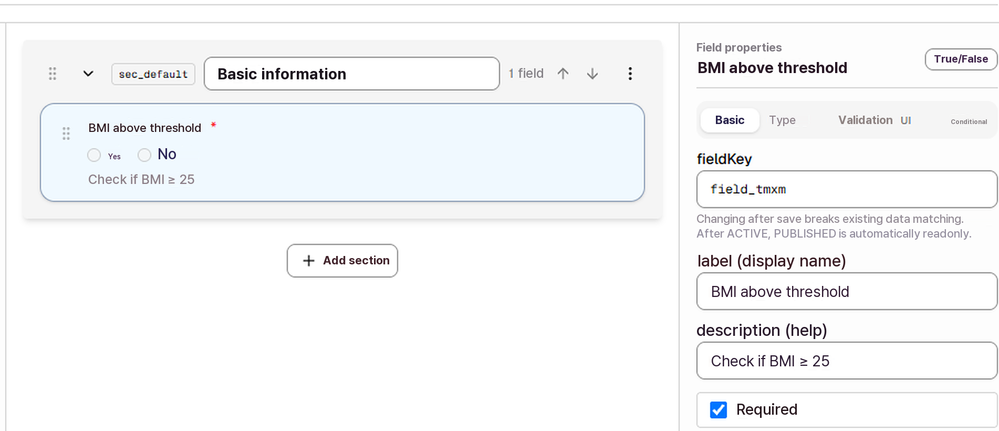
* next to the display name on the canvasRequired — When selected, this field becomes a required item.
A red * appears to the right of the display name on the canvas.
label · description — The values entered in 2.1 are shown as is.
Precautions
Must check Data corruption · Form cannot be completed
- • ⛔ Before making the field required, decide how to handle “cannot confirm”. True/False has only two options, so when the answer cannot be confirmed, the recorder ends up picking one of the two arbitrarily. Also turn on the not-measured declaration 2.4, or if the answer splits into three, use the Single choice type from the start.
- • Hidden fields are excluded from the required check. While hidden by conditional display Ch. 6, the form is completed with the field empty even if it is required.
Easily misunderstood behavior
- • “No” is not an empty value. The system treats choosing “No” and choosing nothing differently — only an empty entry fails the required check.
Note
- • If the not-measured declaration is on and the recorder declares it, the form can be completed even if the item is required. 2.4
2.3SDV target (CRA source data check)
Overview
SDV (Source Data Verification) is the procedure in which the clinical research associate (CRA) checks entered values against the site's source data. Here you decide whether this field is a target of that procedure. This setting is the same for all field types, so the screen is also the same regardless of type.
Screen guide


SDV target (CRA source data check) — When selected, this field is included in the CRA's check list.
When it becomes selected, the sub-item is enabled.
Verification required (if unverified, quality PENDING) — Can be set only after ① is selected. When selected, the quality status of the data stays at PENDING until the CRA finishes the check.
Before ① is selected, ② is grayed out and disabled. As the on-screen notice says, “Set the field as a verification target first to choose whether verification is required.”
Precautions
Must check Data corruption · Form cannot be completed
- • When the value changes, the verification is cleared. If “Yes” is changed to “No”, the quality status returns to PENDING and the CRA must check it again.
Easily misunderstood behavior
- • Record the decision criterion in the help. True/False keeps only the result, not the basis for the judgment — from “Yes” alone, the CRA cannot tell what in the source data to check it against. Writing down the criterion speeds up the check. 2.1
- • SDV cannot be performed by the person who entered the data. The system enforces cross-verification (Cross-User SoD), so the person entering and the person verifying must be different.
Note
- • The quality status progresses in the order PENDING → VERIFIED → CLEAN. If even one field marked verification required is unverified, the data cannot become CLEAN.
2.4Allow not-measured declaration
Overview
A function that records cases where the answer cannot be confirmed as a distinct value. True/False has only two options, so there is no way to tell “not entered yet” from “checked but unknown” — this declaration distinguishes the two. It is a setting especially needed for this type.
Screen guide

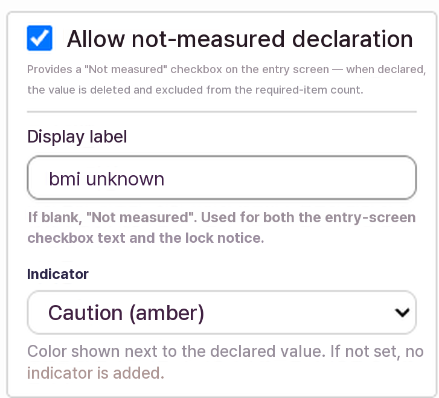
Allow not-measured declaration — When selected, a “Not measured” checkbox is created on the entry screen and the two items below appear.
Display label — If left blank, the default “Not measured” is used.
If you change it to bmi unknown, this text is applied to both the checkbox on the entry screen and the lock notice.
Indicator — The default is None.
If you change it to Caution (amber), a mark in that color appears next to the declared value.
Precautions
Must check Data corruption · Form cannot be completed
- • ⛔ True/False has no place for “unknown”. Options cannot be added, so if you need to record that the answer cannot be confirmed, turning on this declaration is the only way. If it is off, recorders enter “No” instead, and “no” and “don't know” are mixed into one value.
- • Declaring deletes the value. As the on-screen notice says — “When declared, the value is deleted and excluded from the required-item count.”
Easily misunderstood behavior
- • Declared fields are excluded from the required-item count. Therefore the form can be completed even if the item is required.
Note
- • If no indicator is set, no color mark is applied. If emphasis is needed, select Caution (amber) or another option.
Type settings tab — names and display of the two values
- 3.1Type settings tab layout
- 3.2trueLabel · falseLabel
- 3.3Display style (displayStyle)
- 3.4Default value (defaultValue)
3.1Overall layout
Overview
The type settings for True/False have only four boxes. You do not need to create options, so you only set the names of the two values 3.2 · display style 3.3 · default value 3.4. All are empty at first, and even if left empty, defaults apply and the field works normally.
Screen guide
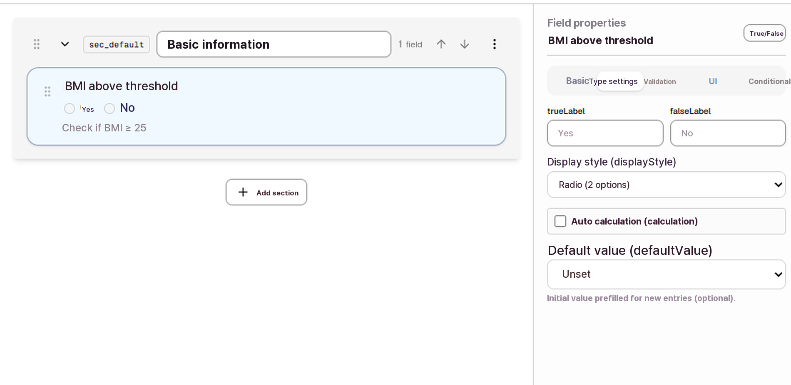
trueLabel — Text shown for the true side. If blank, “Yes” is applied. 3.2
Two radio buttons are already shown on the canvas.
falseLabel — Text shown for the false side. If blank, “No” is applied. 3.2
Display style (displayStyle) — Radio (2 options) or Dropdown. The default for this type is radio. 3.3
Default value (defaultValue) — The value prefilled for new entries. It is Unset at first. 3.4
Auto calculation (calculation) — The item is shown, but it is not used in this type. It computes a value with a formula, so use it in the Number type.
Type badge “True/False” — The type of the field being set.
Property tabs — Currently the Type settings tab.
Precautions
Must check Data corruption · Form cannot be completed
- • Options cannot be increased to three. If you need “Yes” · “No” · “Not applicable”, use the Single choice type, not this type. The type cannot be changed after the field is added. 1.1
Easily misunderstood behavior
- • The faint text
Yes·Nois guidance, not an entered value. If left blank, that text is applied as is, so you can leave it blank if you want to use it unchanged. 3.2 - • The default display style for this type is radio. Single choice defaults to dropdown, the opposite — an easy point to confuse when authoring both types together. 3.3
- • Even if you set the default value on this screen, it is not reflected on the canvas. To check it, you must go to [Preview]. 3.4
3.2trueLabel · falseLabel
Overview
Sets what names to give the two values. Only the text shown on screen changes; the stored values are always true and false — this distinction shows up directly in validation 4.3 and data export.
Screen guide
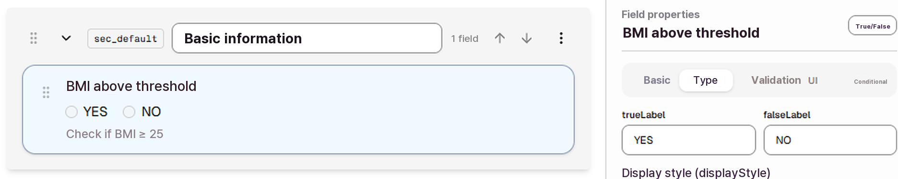
YES · NO changes the canvas radio text immediatelytrueLabel — Enter the text shown on the true radio button.
The text of the left radio button on the canvas changes to YES.
falseLabel — Enter the text shown on the false radio button.
The text of the right radio button on the canvas changes to NO.
Type badge “True/False” — Changing the text does not change the type.
Precautions
Must check Data corruption · Form cannot be completed
- • ⛔ Even if you change the text, the stored values are
true·false. Even when shown asYES, the data containstrue. When comparing in validation rules 4.3 and Conditional Ch. 6, writetrue·false, not the on-screen text. - • ⛔ The left side is always
true. If you enter the two boxes in reverse order, values are saved with the meaning inverted — the screen looks normal and no error is shown. Make sure you have not put “No” in trueLabel. - • Avoid negative wording. Text like “Not not performed” overlaps with “No” to form a double negative, and recorders end up choosing the opposite.
Easily misunderstood behavior
- • The text can be changed even after publishing. It does not affect stored values, so revise it at any time if the wording is awkward.
3.3Display style (displayStyle)
Overview
Sets how the two values are displayed. Radio (2 options) shows both values at a glance, while Dropdown takes up less space. The stored value is the same either way.
Screen guide
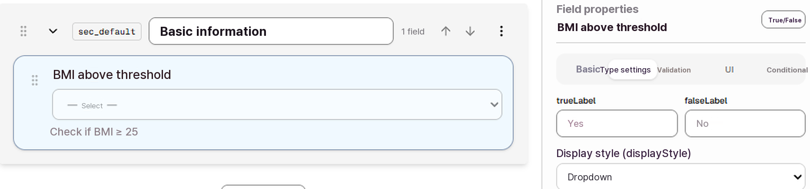
— Select — boxDisplay style (displayStyle) — Choose Radio (2 options) or Dropdown. If not set, radio is applied.
The canvas changes to a dropdown box showing — Select —. When opened, trueLabel · falseLabel appear in order.
trueLabel · falseLabel — Both texts still apply when the display style changes. 3.2
Type badge “True/False”
Precautions
Must check Data corruption · Form cannot be completed
- • ⛔ The dropdown's
— Select —cannot be changed. This text is fixed and is not replaced by the UI tab's placeholder either — the Single choice type does replace it, so the same method does not work here. If guidance is needed, write it in helpText. 5.4 - • In a dropdown, no selection and “No” look similar. When collapsed,
— Select —and “No” both appear as a single line, so it is hard to notice that the recorder skipped the answer.
Easily misunderstood behavior
- • Radio is recommended for clinical trial records. Both values are visible, so what is being asked and the fact that it was not answered are both shown. With a dropdown, the options are not visible until it is opened.
- • With radio buttons, selecting the selected item again clears it. If the wrong one was chosen, you can return to the unselected state.
3.4Default value (defaultValue)
Overview
Sets the value to preselect for new entries. It is Unset at first; when set, that value is shown as selected from the moment the entry screen opens. It is not reflected on the edit screen, so whether it is set can be checked only in Preview.
Screen guide
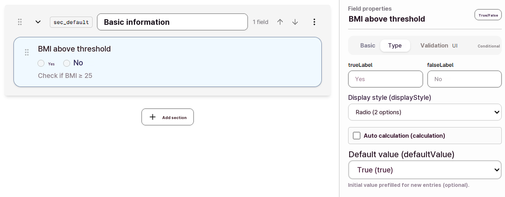
True (true) — the canvas does not change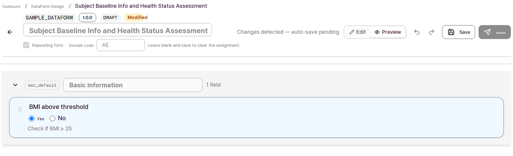
Default value (defaultValue) — Choose from Unset · True (true) · False (false).
In [Preview], it is shown with “Yes” selected.
The canvas does not change. Even with a default value set, the radio buttons on the edit screen stay unselected, so you cannot tell here whether it is set.
[Preview] — The button for checking the form as it looks on the actual entry screen.
Precautions
Must check Data corruption · Form cannot be completed
- • ⛔ The options do not follow the authored text. Even if trueLabel is changed to
YES, this box shows “True (true)” — the screen does not tell you which side isYES, so remember that the left box (trueLabel) is “True” when setting it. 3.2 - • ⛔ Decide carefully whether to set a default value for clinical trial records. A value is filled in even if the recorder did not check it, so an answer that was never asked can be saved. Leave it Unset whenever possible.
- • A field with a default value passes the required check even if the recorder never touches it. Take particular care when using it together with Required 2.2.
Easily misunderstood behavior
- • You cannot tell on the edit screen whether it is set. Always check in [Preview] — this is the most easily missed setting in this type.
Validation tab — checking values before saving
- 4.1No validation rules
- 4.2Adding a rule
- 4.3Completed rule — Compare with another field
4.1No validation rules
Overview
This tab collects rules that check whether a value meets conditions before saving. True/False lets you pick only one of two radio buttons, so there is no way to enter a wrong format — checks such as length · range are unnecessary, and this tab is used only to check relationships with other fields. 4.3
Screen guide
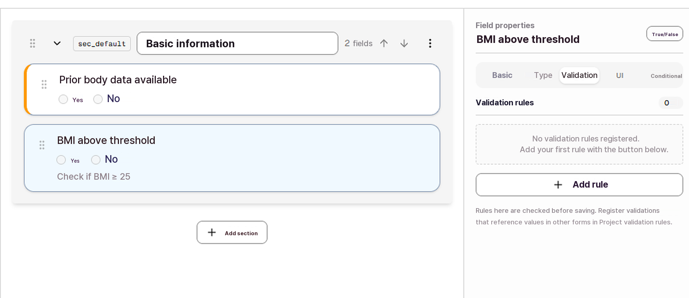
[+ Add rule] — Creates the first rule. The screen after selecting it is explained in 4.2.
The Validation rules area and the number of registered rules. Initially it is 0 items.
When there are no rules, the notice “No validation rules registered. Add your first rule with the button below.” is shown.
Notice at the bottom — “Rules here are checked before saving. Register validations that reference values in other forms in Project validation rules.”
Precautions
Must check Data corruption · Form cannot be completed
- • ⛔ Validations that reference values in other forms cannot be created here. Register such rules on the “Project validation rules” screen. This tab only handles checks that are complete within the same form.
- • The Validation tab is not restricted by type. Rules that do not fit True/False can also be chosen, so you must check yourself that the chosen rule holds for this type. 4.2
Easily misunderstood behavior
- • Most True/False fields need no rules. Only one of two values can be picked, so there is nothing to check — use rules only when there is a relationship linking the field to other fields. 4.3
- • The capture has two fields: “Prior body data available” and “BMI above threshold” — the meaning of the second field depends on the answer to the first, so in 4.3 a rule linking the two fields is created.
4.2Adding a rule
Overview
Selecting [+ Add rule] in 4.1 creates a Rule 1 block. At first “Value range” is set, but True/False has no magnitude, so it does not hold — you must change it to “Compare with another field”. The capture shows the state after the change.
Screen guide
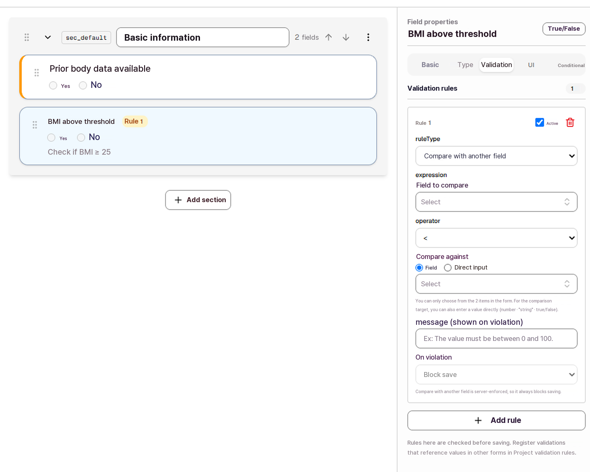
[+ Add rule] — Creates one more rule. (It is the same button you selected in 4.1.)
A “Rule 1” badge appears next to the display name on the canvas.
The number of rules changes to 1 item.
Active checkbox and Delete icon — You can pause a rule without deleting it.
ruleType — The kind of rule. Right after creation it is “Value range”, so change it to “Compare with another field”.
Field to compare — Select another field in the same form. 4.3
operator — The comparison method.
Compare against — Choose between Field and Direct input.
message (shown on violation) — The message shown to users when the rule is violated.
On violation — For “Compare with another field”, it is fixed to Block save. 4.3
The faint text and “Ex: The value must be between 0 and 100.” are input examples, not set values.
Precautions
Must check Data corruption · Form cannot be completed
- • ⛔ Do not use “Value range” · “Decimal places” for True/False. The two values have neither magnitude nor decimal points, so the check does not hold. Even so, the screen lets you choose them, so the author must filter them out.
- • ⛔ Applying “Format (regex)” can block saving. Rules are evaluated regardless of type, so if a character format rule is applied to a True/False field, correctly chosen values are rejected. Do not use it in this type.
- • If message is left blank, users cannot tell why saving was blocked. Be sure to enter it.
Easily misunderstood behavior
- • You can create several rules, and saving succeeds only when all active rules are satisfied.
4.3Completed rule — Compare with another field
Overview
When ruleType is changed to Compare with another field, the value is checked against the value of another field in the same form. It is the only rule type that can actually be used in a True/False field, and it can express a relationship where whether this item is acceptable depends on the answer to a previous question.
Screen guide
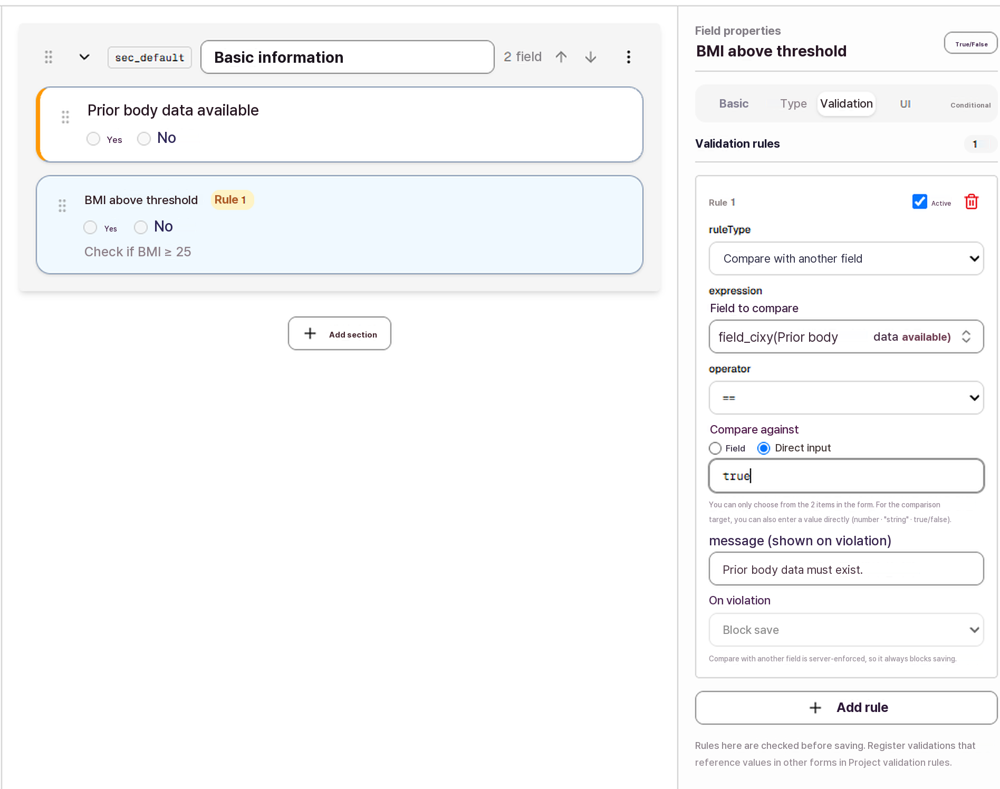
trueruleType = Compare with another field — When selected, the boxes below change for comparison.
Field to compare — Select another field in the same form. The capture uses field_cixy(Prior body data available).
operator — The comparison method. The capture shows == (equals).
Compare against — Choose between Field and Direct input. The capture enters true by direct input — the correct notation when comparing with a True/False field.
message (shown on violation) — The capture uses Prior body data must exist.
On violation — Grayed out and disabled. As the on-screen notice says, “Compare with another field is server-enforced, so it always blocks saving.” — for this rule, Warning cannot be chosen and it is fixed to Block save.
On-screen notice — “You can only choose from the 2 items in the form. For the comparison target, you can also enter a value directly (number · "string" · true/false).” True/False corresponds to the last format.
Precautions
Must check Data corruption · Form cannot be completed
- • ⛔ When comparing with True/False, always write
trueorfalse. If you enter1·0·Yeswith the same meaning, the system cannot evaluate it and the rule silently becomes ineffective — the screen looks normal and no error is shown. This is the most common mistake in this type. - • ⛔ Check the direction of the condition before publishing. A validation rule is written as the condition that must be satisfied. The setting in the capture is “prior body data must be
true”, so choosing “No” blocks saving. After setting it, check the actual behavior in Preview.
Easily misunderstood behavior
- • This rule cannot be set to a warning. On violation is fixed to Block save, so use it only for relationships that must be blocked.
- • If this field is empty, the rule is not checked. A state with nothing selected is not subject to the check; preventing empty entries is the job of Required 2.2.
UI tab — screen layout and guidance text
- 5.1UI tab layout
- 5.2Layout width
- 5.3Read-only · hidden
- 5.4helpText (help)
5.1Overall layout
Overview
This tab sets how the field is laid out and guided on screen, not the value itself. Settings on this tab do not change the stored data itself. However, Hidden only hides the field on screen, so check 5.3 before using it.
Screen guide
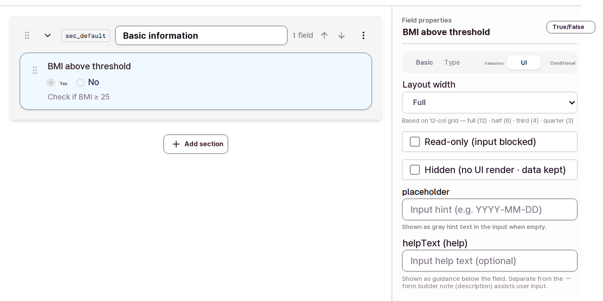
Layout width — The width this field takes up in one row of the form. 5.2
Read-only (input blocked) — Shows the field but prevents changes. 5.3
Hidden (no UI render · data kept) — Hides the field from the screen. 5.3
helpText (help) — Guidance text shown below the field. 5.4
placeholder — The item is shown, but it is not applied in this type. As its guidance text says, “Shown as gray hint text in the input when empty”, it is a setting for types with an input box; True/False has only radio buttons and a dropdown, so there is no place to put the text. 5.4
Type badge “True/False”
Precautions
Must check Data corruption · Form cannot be completed
- • Even if you enter a placeholder, it does not appear on screen. No error or warning is shown either, so the guidance you wrote silently disappears — write guidance in helpText. 5.4
Easily misunderstood behavior
- • Settings in this tab do not change stored values. Only the layout and guidance change.
- • “Yes” appears selected in the capture because a default value has been set. 3.4
Note
- • Do not use Read-only and Hidden together. Hidden takes precedence, so the Read-only setting has no effect. 5.3
5.2Layout width
Overview
Sets the width this field takes up in a row of the form. True/False ends with two radio buttons, so it is a horizontally short type; using the full width leaves the right side empty and makes the form longer — grouping short items in one row makes the form shorter.
Screen guide
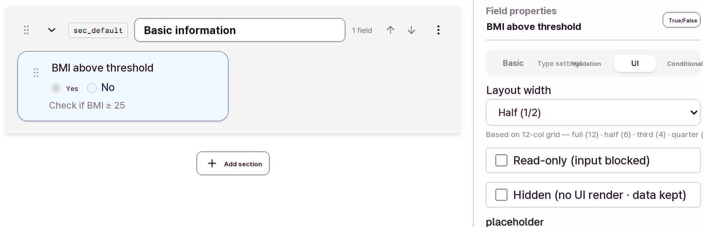
Layout width — Select from Full · Half (1/2) · 1/3 · 1/4.
The canvas card shrinks to half width. Other fields are placed in the remaining space of the same row.
Based on 12-col grid — As the on-screen notice says, “full (12) · half (6) · third (4) · quarter (3)”.
Precautions
Must check Data corruption · Form cannot be completed
- • Do not narrow the width if the text is long. If long text is put in trueLabel · falseLabel, the two radio buttons wrap and become hard to read. 3.2
Easily misunderstood behavior
- • A field switched to dropdown is safe to narrow. When collapsed, it takes up one line regardless of text length. 3.3
- • Group related short items in one row. If there are several items answered with Yes · No, setting them to Half or 1/3 can shorten the form.
Note
- • If not set, full width is applied.
5.3Read-only · hidden
Overview
Settings that show the field but prevent changes, or hide it from the screen while keeping its value. Neither deletes the stored value.
Screen guide
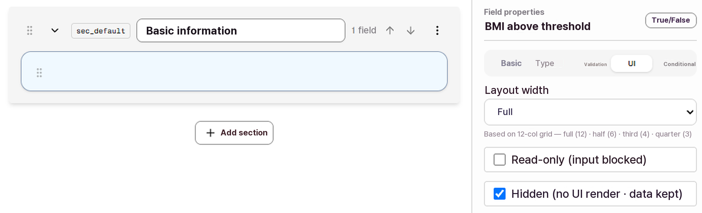
Read-only (input blocked) — When selected, the radio buttons are shown, but the recorder cannot change the selection. Values already saved are shown as is.
Hidden (no UI render · data kept) — When selected, this field is not shown on the entry screen.
Only an empty outline remains of the canvas card. Neither the display name nor the radio buttons are shown.
Layout width — The value set in 5.2.
Precautions
Must check Data corruption · Form cannot be completed
- • ⛔ Hidden does not erase records. Values already saved remain and are included in exports and the audit trail. To remove a value, you must delete the field rather than hide it, and it cannot be deleted after publishing. 1.1
Easily misunderstood behavior
- • Use Read-only for automatically filled values. It suits cases where a judgment decided elsewhere is only displayed. Do not use it for items the recorder must answer directly.
- • To hide a field based on a condition, use conditional display. Hidden on this tab always hides the field and does not change with values. Ch. 6
Note
- • If Hidden and Read-only are both selected, Hidden applies. Read-only has no meaning for a field that is not visible.
5.4helpText (help)
Overview
This is where you write text that helps the recorder decide which side to choose. True/False shows only two values and does not reveal the criterion, so this text is especially important. The placeholder on the same tab is not applied in this type.
Screen guide
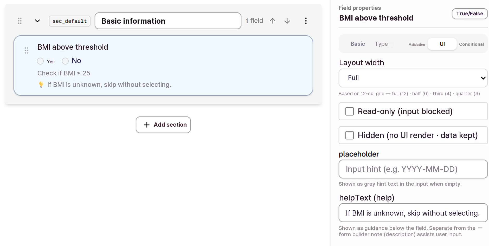
helpText (help) — Enter the guidance text to show below the field.
It is shown below the radio buttons with a 💡 icon. The capture uses “If BMI is unknown, skip without selecting.”
placeholder — It is not applied in this type. Even if entered, it does not appear on screen and no error is shown. Even when switched to dropdown, — Select — is fixed and is not replaced. 3.3
description (help) — The text entered in 2.1. It is a different item from helpText and is shown in a different place.
Precautions
Must check Data corruption · Form cannot be completed
- • ⛔ Do not write guidance in the placeholder. In this type it does not appear on screen, so what you wrote silently disappears. It works in the Single choice type, so it is easy to assume the same method works here. 3.3
- • Write the decision criterion in helpText. “Yes” · “No” alone do not show where the boundary is — writing down what to do when the answer is unknown, as in the capture, reduces variation between recorders.
Easily misunderstood behavior
- • description and helpText are different items. As the on-screen notice says, helpText is “Separate from the form builder note (description) — assists user input”. If both are entered, both lines are shown.
Note
- • If you have turned on the not-measured declaration 2.4, also explain how to use it in helpText. Recorders do not use the checkbox if they do not know what it means.
Conditional tab — showing a field based on another value
- 6.1Enabling conditional display
- 6.2Setting the condition
6.1Enabling conditional display
Overview
A function that shows or hides this field based on the value of another field. Use it for branching such as asking this item only when a specific answer was given to a previous question. It is no problem for the hidden side (target) to be True/False — what needs attention is the type of the reference field that serves as the basis. 6.2
Screen guide
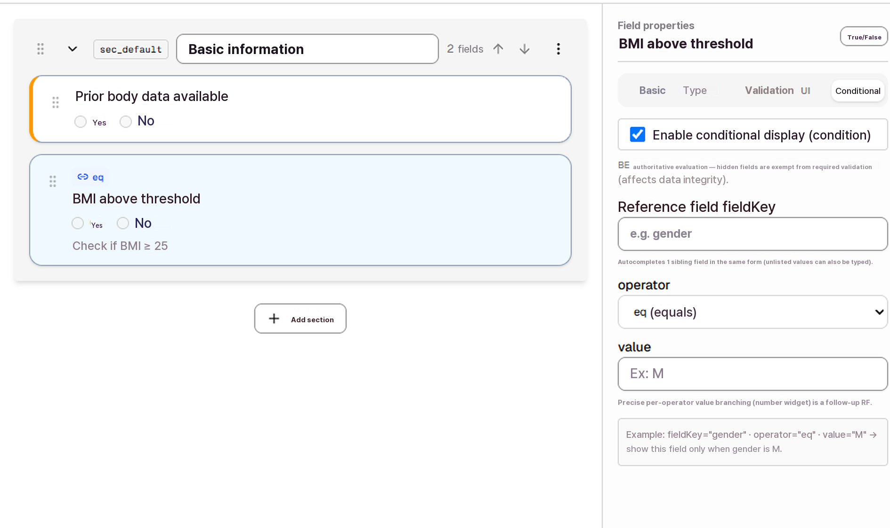
Enable conditional display (condition) — When selected, the condition settings below appear.
A 🔗 eq badge appears above the field on the canvas to show that a condition is applied.
Reference field fieldKey — Another field in the same form on which the condition is based. Sibling fields in the same form are autocompleted, and you can also type a value not in the list.
operator — The comparison method. The default is eq (equals).
value — The value to compare. What you write here is the most important point in this chapter. 6.2
⚠ On-screen notice — “Hidden fields are exempt from required validation (affects data integrity).” The condition is evaluated by the system.
Example at the bottom — fieldKey="gender" · operator="eq" · value="M" → show this field only when gender is M.
Precautions
Must check Data corruption · Form cannot be completed
- • ⛔ Do not specify a True/False field as the reference field. If the basis field is True/False, this field is never shown. Make the item to be used as the basis a Single choice type. Details are in 6.2.
- • ⛔ Setting a condition exempts the field from required validation. While hidden because the condition is not met, the form is completed with the field empty even if it is required. So if the condition is wrong, data ends up empty without any error.
Easily misunderstood behavior
- • Consider conditional display before validation rules 4.3. If people to whom the question does not apply are never asked, they cannot choose wrongly and saving is never blocked.
Note
- • If you enable the condition and leave the reference field blank, the condition is never met. Be sure to fill in all of ②–④. 6.2
6.2Setting the condition
Overview
The condition enabled in 6.1, fully entered. The setting reads as “show this field only when “Prior body data available” equals 1”. However, this setting does not work as intended — because the reference field is of the True/False type. Be sure to check the precautions below.
Screen guide
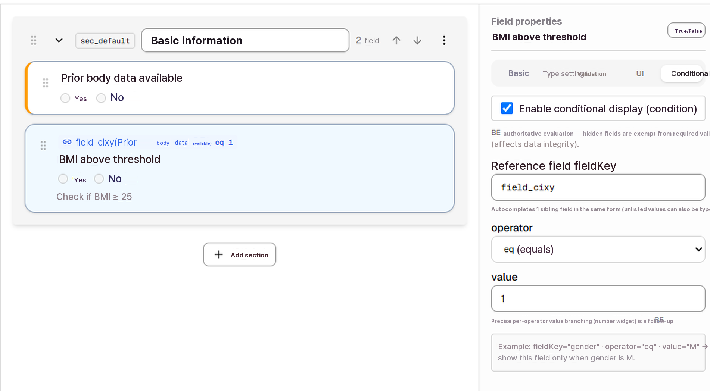
1Reference field fieldKey = field_cixy — Points to the “Prior body data available” field in the same form. The problem is that this field is of the True/False type.
Result of entering all of ①–③ — the canvas badge is specified as 🔗 field_cixy(Prior body data available) eq 1. A badge being shown does not mean the condition holds.
operator = eq (equals)
value = 1 — The number 1 was entered to mean “Yes”, but it is a format that cannot be compared with a True/False field.
⚠ On-screen notice — “hidden fields are exempt from required validation (affects data integrity).” If the condition does not hold, this exemption applies permanently.
Example below — fieldKey="gender" · operator="eq" · value="M" → show this field only when gender is M. Note that the example is a string.
Precautions
Must check Data corruption · Form cannot be completed
- • ⛔ The setting in the capture does not work. If the reference field is True/False, the stored value is
true·false, but the value box is always passed as a string. The two formats cannot be compared, so the system gives up evaluating, and a condition that cannot be evaluated is treated as hidden. The result is the same even if you correct it totrue. - • ⛔ As a result, this field is never shown. And since hidden fields are exempt from required validation, the form is completed without a value even though the item is required. No error or warning is shown either, so you only discover that the data is empty after publishing.
- • ⛔ Make the item to be used as the condition basis a Single choice type. Single choice stores values as strings, so the format matches the value box — entering the stored value as is, like
Y, works normally. 1.1 - • After setting it, always check in Preview. A badge being shown does not mean the condition holds — you must change the basis value and check whether the field actually appears.
Easily misunderstood behavior
- • Changing or deleting the fieldKey of the referenced field also breaks the condition. Conditions are linked by fieldKey, not by display name. 2.1
Appendix
- 7.1Settings by tab at a glance
- 7.2Must remember · not covered
7.1Settings by tab at a glance
Settings by tab
| Tab | Item | What it sets | Section |
|---|---|---|---|
| Basic | fieldKey | The actual key under which the value is stored (do not change after saving) | 2.1 |
| label (display name) | Item name shown on screen — phrase it as a yes/no item so the answer splits into two | 2.1 | |
| description (help) | Supporting description below the display name — decision criterion | 2.1 | |
| Required | Whether an answer is mandatory (decide how to handle “cannot confirm” first) | 2.2 | |
| SDV target | Whether it is a CRA source data check target · whether verification is required | 2.3 | |
| AE semantic role | This type is a valid target — ‘SAE status’, etc. | 1.1 · ※ | |
| Allow not-measured declaration | Especially important in this type — the only way to record “unknown” | 2.4 | |
| Type settings | trueLabel | Text for the true side (blank = “Yes”) — the left side is always true | 3.2 |
| falseLabel | Text for the false side (blank = “No”) | 3.2 | |
| Display style (displayStyle) | Radio / Dropdown — default is radio | 3.3 | |
| Default value (defaultValue) | Value to preselect (check only in Preview · options fixed to “True/False”) | 3.4 | |
| Validation | ruleType | Kind of rule — the only one usable in this type is Compare with another field | 4.2 · 4.3 |
| Field to compare · operator · Compare against | Condition compared against another field in the same form (compare with true/false) | 4.3 | |
| message | Message shown to users on violation | 4.3 | |
| On violation · Active | Compare with another field is fixed to Block save · rule active · inactive | 4.3 | |
| UI | Layout width | Width on the 12-col grid (do not narrow if the text is long) | 5.2 |
| Read-only | Shown but not changeable | 5.3 | |
| Hidden | Not shown on screen (stored value is kept) | 5.3 | |
| helpText | Guidance on the decision criterion (placeholder not applied in this type) | 5.4 | |
| Conditional | Condition active | Whether conditional display is used (exempt from required validation) | 6.1 |
| Reference field fieldKey | Field in the same form that serves as the condition basis — do not specify True/False | 6.2 | |
| operator · value | Comparison method and value to compare (passed as a string) | 6.2 |
7.2Must remember · not covered
Must remember
Must check Data corruption · Form cannot be completed
- • The stored values are always
true·false. Changing the text to “YES” does not change the data — when comparing in validation · Conditional, writetrue·false, not the text. 3.2 · 4.3 - • Make the item used as the condition basis a Single choice field. If a True/False field is specified as the reference field, the target field is never shown and is even exempt from required validation, so it is completed without a value. 6.2
- • Do not use “Value range” · “Decimal places” · “Format (regex)”. They can be chosen on screen but do not hold for this type, and a regex can block valid input. 4.2
- • The left box (trueLabel) is always
true. If the two boxes are swapped, values are saved with the meaning inverted and no error is shown. 3.2 - • If you need to record “unknown”, turn on the not-measured declaration. Options cannot be added, so if it is off, “no” and “don't know” are mixed into one value. 2.4
Easily misunderstood behavior
- • The default value does not appear on the edit screen. It can be checked only in [Preview]. The options are also shown as “True (true)”, not the authored text. 3.4
- • If a Single choice field is set to radio, the screen looks exactly the same. Tell them apart by the type badge — what differs is the stored value. 1.1
- • The default display style is radio. Single choice defaults to dropdown, the opposite. 3.3
Note
- • For the same relationship, conditional display comes before validation rules — if the question is not asked, it cannot be answered wrongly. 4.3 · 6.1
Not covered in this document
※ AE semantic role — This type is a valid target, but there is no capture of the setup process, so no separate section is provided. For details on how to use it, see the AE documentation. 1.1
placeholder — The item is shown on the UI tab, but it is not applied in this type. Radio buttons and dropdowns have no place for the text, and the dropdown's — Select — is also fixed. Write guidance in helpText. 3.3 · 5.4
Auto calculation (calculation) — The item is shown in the Type settings tab, but it is not used for this type. It derives values from a formula, so use it with the Number type. 3.1
Common code (CodeGroup) integration — Managing options as project common codes is a function of types that create options (Single choice · Multiple choice). True/False has two fixed values, so it does not apply.
Activation condition (activeParams) — Defined in the system, but this screen has no item for it.
A screen where conditional display works correctly — The Ch. 6 capture is a setting that does not work because the reference field is True/False. For a working example, see Ch. 6 of the Single choice volume. 6.2